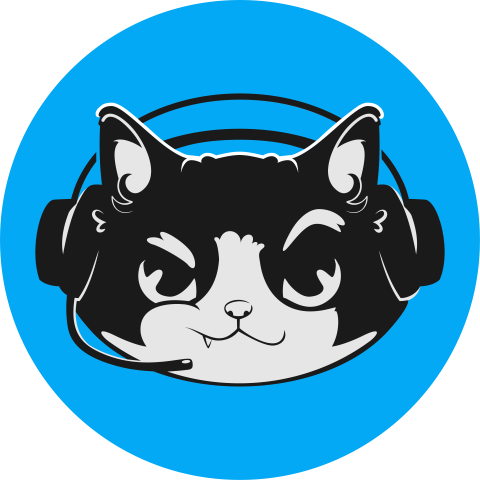

KICK SOHBETİKick'te aç ↗
Yayın iki platformda aynı anda. Yazmak için sohbetlerde kendi hesabınla giriş yapman yeterli · Twitch · Kick
TWITCH SOHBETİTwitch'te aç ↗

KAPTAN QEDY CANLIYayın iki platformda aynı anda. Yazmak için sohbetlerde kendi hesabınla giriş yapman yeterli · Twitch · Kick